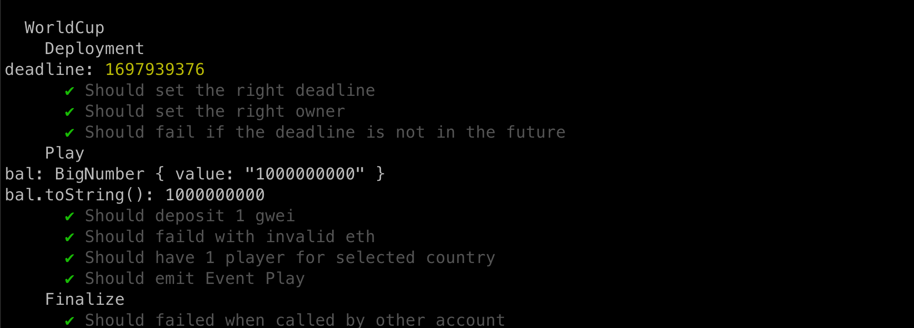
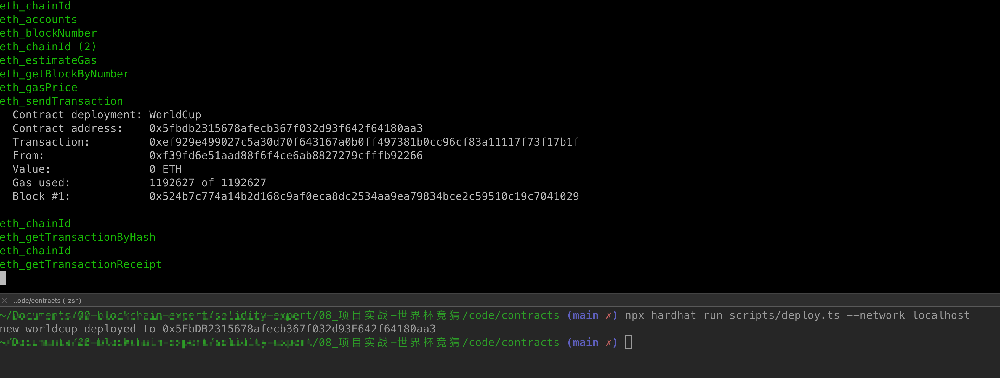

第2节：世界杯竞猜（hardhat框架）
本文收录于我的开源项目：https://github.com/dukedaily/solidity-expert ，欢迎star转发，文末加V入群。

内容概述
通过学习，掌握最主流的开发框架hardhat，从而了解如何管理以太坊工程代码，并掌握如何进行常用操作，单元测试等。
前置条件
了解JavaScript（TypeScript）
了解合约开发基础
学习目标
- 了解技术栈、hardhat框架使用：编译、部署、verify、单元测试、查看size、部署消耗gas统计
- 早期2018年工具链：solidity(0.4.16) + truffle + infura （rpc）+ web3.js（重，强大） + js
- 目前2022年工具链：solidity(0.8.16) + hardhat + alchemy （更快）+ ethers.js（轻） + ts
- 集成WorldCup合约，完成部署、verify、单元测试
创建hardhat项目
#创建npm空项目
npm init
#安装命令，对照两个版本的差异性
npm install --save-dev hardhat@2.11.1 # 新案例，新工具包
npm install --save-dev hardhat@2.9.7
#创建工程
npx hardhat-》选择高级ts项目
目录结构

运行测试
#编译合约
npx hardhat compile
#单元测试
npx hardhat test
执行效果如下：

至此，官方代码我们已经验证完成（逻辑很简单，请自行阅读，如有疑问请咨询：Adugii），接下来我们需要改造成自己的代码！
添加合约
将Worldcup.sol（上节编写的合约）添加到contracts目录，编译：npm run compile
编写单元测试
- 创建test/WorldCup.ts，用于编写测试文件，首先引入测试工具包：
import { time, loadFixture } from "@nomicfoundation/hardhat-network-helpers";
import { anyValue } from "@nomicfoundation/hardhat-chai-matchers/withArgs";
import { expect } from "chai";
import { ethers } from "hardhat";
import hre from "hardhat";
import { WorldCup } from "../typechain-types";
- 合约初始化部署
describe("WorldCup", function () {
async function deployWorldcupFixture() {
// 获取第一个钱包对象，用于发起交易
const [owner, otherAccount] = await ethers.getSigners();
// 获取合约对象
const WorldCup = await ethers.getContractFactory("WorldCup");
const deadline = (await time.latest()) + TWO_WEEKS_IN_SECS;
// 部署合约
const worldcup = await WorldCup.deploy(deadline);
return { worldcup, deadline, owner, otherAccount };
}
this.beforeEach(async () => {
// 从内存中获取合约状态快照（仅用于测试），执行每个单元测试的时候，状态都会回到最初
const { worldcup, owner, otherAccount, deadline } = await loadFixture(deployWorldcupFixture);
worldcupIns = worldcup
ownerAddr = owner.address
otherAccountAddr = otherAccount.address
deadline1 = deadline
})
})
- 编写测试逻辑
describe("Deployment", function () {
// 检查部署后，owner是否正确
it("Should set the right owner", async function () {
const { worldcup, owner } = await loadFixture(deployWorldcupFixture);
expect(await worldcupIns.admin()).to.equal(ownerAddr);
});
// 检查部署时，如果传入参数不满足，是否会抛出异常
it("Should fail if the deadline is not in the future", async function () {
const latestTime = await time.latest();
const WorldCup = await ethers.getContractFactory("WorldCup");
await expect(WorldCup.deploy(latestTime)).to.be.revertedWith(
"WorldCupLottery: invalid deadline!"
);
});
编写完，运行单元测试：npm run test，效果如下：（请运行GitHub上面的代码，此处是精简版，无法运行，仅用于说明原理）

单元测试至此告一段落，接下来我们开始考虑将代码部署到区块链网络中。
部署到本地网络
hardhat内部实现了一个本地evm，可以运行一个本地节点，开发过程，我们可以选择启动节点，并在上面部署，具体如下：
#运行脚本，部署合约
npx hardhat run scripts/deploy.ts
#启动节点node
npx hardhat node
#部署合约到本地node节点
npx hardhat run scripts/deploy.ts --network localhost
效果如下，方便快速验证合约及脚本
修改配置文件
如果想部署到真实的测试网络，我们需要修改一下配置文件：hardhat.config.ts，具体如下：
import { HardhatUserConfig } from "hardhat/config";
import "@nomicfoundation/hardhat-toolbox";
// 在配置文件中引用，
// 需要单独安装：npm install dotenv
require('dotenv').config()
let ALCHEMY_KEY = process.env.ALCHEMY_KEY || ''
let INFURA_KEY = process.env.INFURA_KEY || ''
let PRIVATE_KEY = process.env.PRIVATE_KEY || ''
let ETHERSCAN_API_KEY = process.env.ETHERSCAN_API_KEY || ''
console.log(ALCHEMY_KEY);
console.log(INFURA_KEY);
console.log(PRIVATE_KEY);
console.log(ETHERSCAN_API_KEY);
const config: HardhatUserConfig = {
// solidity: "0.8.9",
// 配置网络 kovan, bsc, mainnet
networks: {
hardhat: {
},
// 配置goerli网络
goerli: {
url: `https://eth-goerli.alchemyapi.io/v2/${ALCHEMY_KEY}`,
accounts: [PRIVATE_KEY]
},
kovan: {
url: `https://kovan.infura.io/v3/${INFURA_KEY}`,
accounts: [PRIVATE_KEY]
}
},
// 配置自动化verify相关
etherscan: {
apiKey: {
goerli: ETHERSCAN_API_KEY
}
},
// 配置编译器版本
solidity: {
version: "0.8.9",
settings: {
optimizer: {
enabled: true,
runs: 200
}
}
},
};
export default config;
修改部署脚本
修改scripts/deploy.ts
import { ethers } from "hardhat";
async function main() {
const TWO_WEEKS_IN_SECS = 14 * 24 * 60 * 60;
const timestamp = Math.floor(Date.now() / 1000)
const deadline = timestamp + TWO_WEEKS_IN_SECS;
console.log(timestamp)
// 获取对象
const WorldCup = await ethers.getContractFactory("WorldCup");
// 部署
const worldcup = await WorldCup.deploy(deadline);
// 等待部署完成
await worldcup.deployed();
console.log(`new worldcup deployed to ${worldcup.address}`);
}
main().catch((error) => {
console.error(error);
process.exitCode = 1;
});
部署到goerli网络：
# npx hardhat run scripts/deploy.ts --network <netWorkName>
npx hardhat run scripts/deploy.ts --network goerli #在配置文件中已经配置了
# 得到地址如下：0xD0f85823D7e118BB7fa4D460A25851fCf99f7Fa9

自动验证代码：
# npx hardhat verify <contractAddr> [para1] [para2] ... --network goerli
npx hardhat verify 0xD0f85823D7e118BB7fa4D460A25851fCf99f7Fa9 1665193342 --network goerli
效果如下：

小结
至此，我们本节内容全部完成了，主要学习了hardhat的安装，基础命令，单元测试编写，并且结合我们的业务合约，通过修改配置文件和脚本，成功的部署到了goerli测试网络，且自动verify代码，这些都是我们日常开发过程中的真实开发步骤，请务必好好消化！
本文代码托管在github：https://github.com/dukedaily/solidity-expert， 欢迎start，谢谢支持！
下次预告
- 主流token协议
- ERC20 -> USDT，DAI，approve, allowance, transfer, transferFrom, safeTransfer...
- ERC721 -> NFT1
- ERC1155 -> NFT2
加V入群：Adugii，公众号：阿杜在新加坡，一起抱团拥抱web3，下期见！
关于作者：国内第一批区块链布道者；2017年开始专注于区块链教育(btc, eth, fabric)，目前base新加坡，专注海外defi,dex,元宇宙等业务方向。